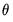
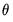

In “ARMA Method” we described how EViews lets you choose between maximum likelihood (ML), generalized least squares (GLS), and conditional least squares (CLS) estimation for ARIMA and ARFIMA estimation.
Since the exact likelihood function in Equation (24.55) depends on the data, and the mean and ARMA parameters only through the last term in the expression, we may ignore the inessential constants and the log determinant term to define a generalized least squares objective function
The recursive innovation equation in Equation (24.54) is easy to evaluate given parameter values, lagged values of the differenced

,

, and estimates of the lagged innovations. Note, however that neither the

nor the can be substituted in the first period as they are not available until we start up the difference equation.
It is important to note that textbooks often describe techniques for estimating linear AR models like Equation (24.58). The most widely discussed approaches, the Cochrane-Orcutt, Prais-Winsten, Hatanaka, and Hildreth-Lu procedures, are multi-step approaches designed so that estimation can be performed using standard linear regression. These approaches proceed by obtaining an initial consistent estimate of the AR coefficients

and then estimating the remaining coefficients via a second-stage linear regression.


values for the innovations beyond the estimation sample are set to zero:


 is the symmetric Toeplitz covariance matrix for the
is the symmetric Toeplitz covariance matrix for the  draws from the ARMA/ARFIMA process for the unconditional residuals (Doornik and Ooms 2003). Note that direct evaluation of this function requires the inversion of a large
draws from the ARMA/ARFIMA process for the unconditional residuals (Doornik and Ooms 2003). Note that direct evaluation of this function requires the inversion of a large  matrix
matrix  which is impractical for large
which is impractical for large  for both storage and computational reasons.
for both storage and computational reasons. to be a known integer. The ARFIMA model treats
to be a known integer. The ARFIMA model treats  as an estimable parameter.
as an estimable parameter. is a known integer, we may employ the Kalman filter to efficiently evaluate the likelihood. The Kalman filter works with the state space prediction error decomposition form of the likelihood, which eliminates the need to invert the large matrix
is a known integer, we may employ the Kalman filter to efficiently evaluate the likelihood. The Kalman filter works with the state space prediction error decomposition form of the likelihood, which eliminates the need to invert the large matrix  .
. which an involve an infinite order MA representation. Fortunately, Hosking (1981) and Sowell (1992) describe closed-form alternatives and Sowell (1992) derives efficient recursive algorithms using hypergeometric functions.
which an involve an infinite order MA representation. Fortunately, Hosking (1981) and Sowell (1992) describe closed-form alternatives and Sowell (1992) derives efficient recursive algorithms using hypergeometric functions. matrix
matrix  .
. and the scale parameter
and the scale parameter  .
. and
and  . Given these presample values, the conditional likelihood function for normally distributed innovations is given by
. Given these presample values, the conditional likelihood function for normally distributed innovations is given by , so that the conditional likelihood may be maximized by minimizing
, so that the conditional likelihood may be maximized by minimizing  .
. ) regression model of the form:
) regression model of the form: . Estimation of this model using conditional least squares requires computation of the innovations
. Estimation of this model using conditional least squares requires computation of the innovations  for each period in the estimation sample.
for each period in the estimation sample.  pre-sample values to evaluate the AR process at
pre-sample values to evaluate the AR process at  and
and  in the period before the start of the recursion. If these values are not available, we must adjust the period of interest to begin at so that the values of the observed data in
in the period before the start of the recursion. If these values are not available, we must adjust the period of interest to begin at so that the values of the observed data in  may be substituted into the equation to obtain an expression for .
may be substituted into the equation to obtain an expression for . and
and  are estimated simultaneously by minimizing the nonlinear sum-of-squares function (which maximizes the conditional likelihood). The nonlinear least squares approach has the advantage of being easy-to-understand, generally applicable, and easily extended to models that contain endogenous right-hand side variables and to nonlinear mean specifications.
are estimated simultaneously by minimizing the nonlinear sum-of-squares function (which maximizes the conditional likelihood). The nonlinear least squares approach has the advantage of being easy-to-understand, generally applicable, and easily extended to models that contain endogenous right-hand side variables and to nonlinear mean specifications. ) regression model of the form:
) regression model of the form: for each period in the estimation sample.
for each period in the estimation sample. :
: , we may use forward recursion to solve for the remaining values of the innovations:
, we may use forward recursion to solve for the remaining values of the innovations: .
.  :
: for this period.
for this period.  . The final
. The final  values, , which we use as our estimates, may be termed the backcast estimates of the pre-sample innovations. (Note that if your model also includes AR terms, EViews will
values, , which we use as our estimates, may be termed the backcast estimates of the pre-sample innovations. (Note that if your model also includes AR terms, EViews will  -difference the to eliminate the serial correlation prior to performing the backcast.)
-difference the to eliminate the serial correlation prior to performing the backcast.) to their unconditional expected values of 0:
to their unconditional expected values of 0: and
and  , using the fitted values of the lagged innovations:
, using the fitted values of the lagged innovations: and
and  .
.  and  converge.
and  converge.